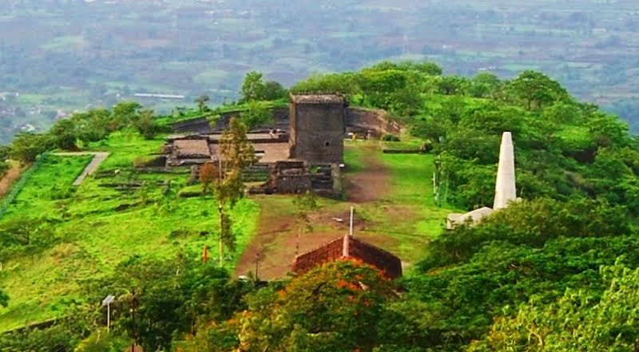
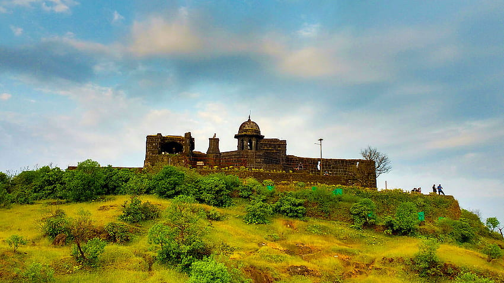
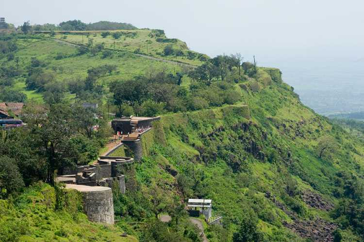

Forts in Maharashtra
Shivneri Fort
Timing: 9 am to 6 pm
Shivneri got its name as it was under the possession of the Yadavas of Devagiri. This fort was mainly used
to guard the old trading route from Desh to the port city of Kalyan.
Nearest Bus Stand: Pune
Nearest Airport: Pune
Nearest Railway Station: talegaon dabhade pune
Raigad Fort
>Timing: 10 am to 5 pm
Nearest Bus Stand: murud Raigad
Nearest Airport:Pune lohgaon Airport
Nearest Railway Station: Mangaon
Rajgad Fort

Timing:9am to 5pm
Nearest Bus Stand:Swarget pune
Nearest Airport: pune
Nearest Railway Station:pune
Panhala Fort
Timing:10am to 5pm
Nearest Bus Stand:Kolhapur
Nearest Airport:kolhapur
Nearest Railway Station:Kolhapur
Sinhgad Fort

Timing:9am to 6pm
Nearest Bus Stand:Sinhgad Paytha
Nearest Airport:Pune
Nearest Railway Station:Pune